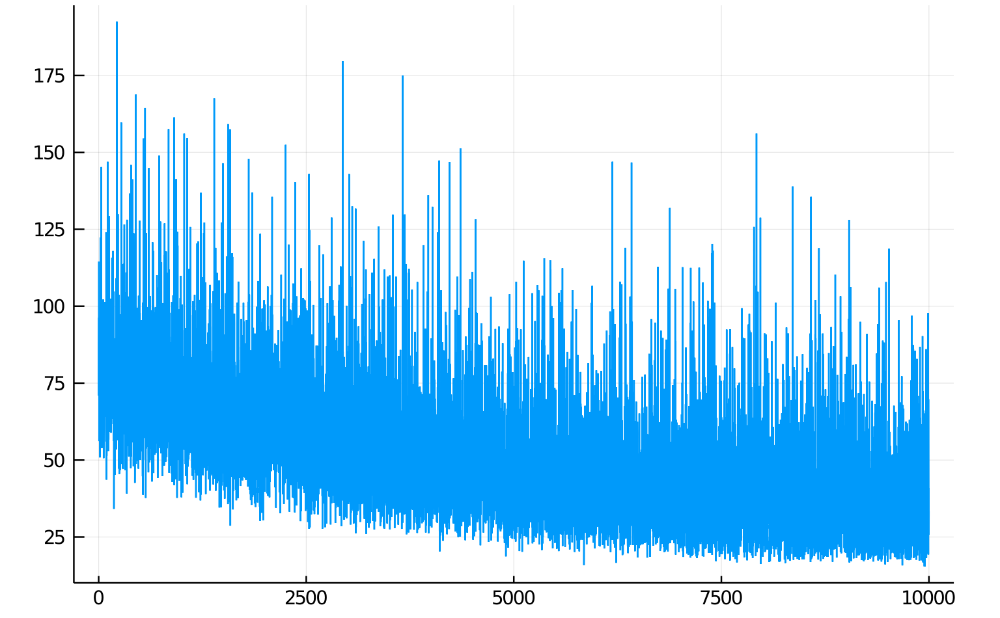

Jaynes contains a number of components which utilize or allow for differentiable programming. At the highest level, learnable parameters can be declared by passing literals into rand calls. These declarations are not used in contexts parametrized by inference and tracing metadata, but have a special interpretation in contexts parametrized by GradientMeta instances.
Learnable parameters
# Literals are tracked as trainable.
x = rand(:x, 10.0)
t = rand(:t, 7.0)This informally represents a sort of delta distribution with initial parameter equal to the literal. You might imagine constructing a program foo1 with learnable parameters:
function foo1()
# Literals are tracked as trainable.
x = rand(:x, 10.0)
t = rand(:t, 7.0)
cat_p = rand(:cat_p, 0.2)
# Rand calls on distributions also get tracked and the dependency graph is created.
y = rand(:y, Normal, (x, 1.0))
z = rand(:z, Normal, (t, 3.0))
cat = rand(:cat, Categorical, ([cat_p, 1 - cat_p], ))
for i in 1:10
if cat == 1
q = rand(:q => i, Normal, (5.0, 1.0))
else
q = rand(:q => i, Normal, (8.0, 1.0))
end
end
return z
endThe natural objective is the logpdf of a trace over the execution of this program. We might generate traces from another program, and perform gradient-based learning to maximize the logpdf of the model program with learnable parameters.
function foo2()
x = rand(:x, 1.0)
y = rand(:y, Normal, (x, 1.0))
z = rand(:z, Normal, (x + 10, 13.0))
cat = rand(:cat, Categorical, ([0.5, 0.5],))
for i in 1:10
if cat == 1
q = rand(:q => i, Normal, (5.0, 1.0))
else
q = rand(:q => i, Normal, (10.0, 1.0))
end
end
return z
endWe can generate a batch of traces from the target foo2:
ctx, trs, _, _ = importance_sampling(foo2, (), 10000)Jaynes supports Flux-style learning APIs:
trained_ctx, losses = train!(ADAM(), foo1, (), trs)
plt = plot(losses, legend=:false)
display(plt)
Despite the fact that this seems like a batch training step with batch trs - the optimization is performed on a trace by trace basis, because traces can have different shapes.
There are methodologies to allow for vectorized batching of traces (i.e. when the modeling language is restricted, so that the call graph of the program is constant over traces) but they are not yet enabled in the library.
Here, after training, the resultant parameter values are stored in trained_ctx.metadata.trainable which is a map from Address to values. These values can be extracted and used in other contexts - the contextual execution of any program which includes addressed rand calls with literals will check the context for trainable metadata and return if the address matches a key.
Inference compilation
One powerful inference feature allowed by the differentiable programming capabilities available in Julia is the creation of inference compilers automatically on a program by program basis. Inference compilers are neural network architectures which are trained to produce proposal distributions for sequential sampling-based inference engines.